Witcher's Eye
| Witcher's Eye | |
|---|---|
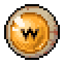 | |
General Information
| |
Type :
|
Quest item |
Source(s)
| |
| Marquis Teodoro Jr | |
Technical Information
| |
Internal name:
|
i_witchers_eye |

| “ | Delivers its bearer visions of the past. Cranky. Only works when it wants to. | „ |
| ~ Item description |
Witcher's Eye is a quest item from the Game of Crone DLC. It is given to the player by Marquis Teodoro Jr. after building the garden and obtaining 7 total people in the Refugee camp. Once Master Alaric explains the use of the item after his identity is uncovered, it allows the player to "see" scenes from the past by interacting with pink memory clouds. Witcher's Eye must be in the player's main inventory (not a bag) to see the memory clouds.
Main Questline
To help Alaric figure out how to stop the Ancient Curse, the player must search for leads on the vampires who attacked the Astrologer. On the eastern side of the waterfall, west of the Apiary area, the Keeper can view a series of nine total memories of the Astrologer and the former Graveyard Keeper partying. After the final memory, a dig spot appears and the Vampires jaw can be unearthed.
Optional locations
| SCREENSHOT | LOCATION | DESCRIPTION |
|---|---|---|
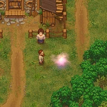 |
Near Rosa | There was a long line here. Cory, Adam, Miller, Merchant, and five others. All elegantly dressed, with flowers and gifts. Oh, they're here to woo Rosa! Shepherd appears, pushes everyone to sides, takes Rose in his hands, kisses her lips, and carries her away. |
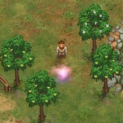 |
In the Lighthouse orchard | An astonishingly fat woman carrying a crowbar is looking for someone. Her face is crimson with fury, and she's breathing heavily. The Lighthouse Keeper is returning to the Lighthouse, singing a funny song. He's carrying a fishing rod and a bucket full of fish. He sees the woman, and she sees him. She rushes towards him. He throws down the rod and bucket, runs towards the cliff, and leaps from it into the sea. |
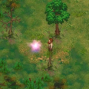 |
East of the Swamp bridge | Wow, a whole squad of soldiers was here. Thirty-three guys in black and orange uniforms. And Inquisitor is with them. He gives them an inspiring speech and sends them to... to capture Clotho?! The Inquisitor waits for an hour, killing mosquitoes and flies with a huge gilded book. The Inquisitor departs, accompanied by thirty-three black-and-orange-clad frogs. |
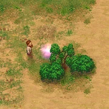 |
On the beach north of the Lighthouse | Ms. Charm swims in crystal clear water. What a magnificent sight! Vagner watches Ms. Charm from the nearby bushes. Nearly naked, she returns to the beach. Vagner inhales deeply... and starts writing an inspired poem. |
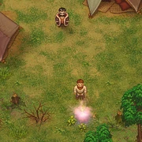 |
South of the Gypsy Baron | A young Astrologer and a gypsy quickly kiss each other, and then he goes away. The Gypsy Baron appears. He pushes the woman aside, pulls out a knife, and runs after Astrologer. The young gypsy yells something and points at her belly. Then he rips off her necklace and slaps her. She falls down and cries... |
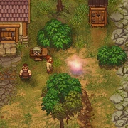 |
Krezvold's courtyard | Late at night, Beekeeper is holding a torch, showing Krezvold a parchment with the plans for a Bee Gun, Bee Grenades, and Honeyed Goggles. Krezvold thinks and nods. Beekeeper shakes his hand, then places on the ground something wrapped in a blanket. After Beekeeper leaves, Krezvold unwraps the blanket, and gently passes his hand over a gilded cuirass, tarnished by rust. |
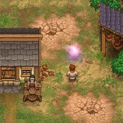 |
Adam's courtyard | Adam displays several very beautiful vases in front of Merchant. Merchant examines them thoroughly, frowns, shakes his head, and goes away. Adam's lower lip shakes. He rushes into his house, and quickly returns with a small rag doll portraying Merchant. He takes out a pin and starts desperately stabbing the doll with it. |
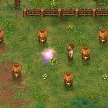 |
Beekeeper's courtyard | In the center, Beekeeper puts up a mannequin portraying Adam, with targets on his legs and arms. Beekeeper strikes a gong. Nothing happens. Beekeeper takes the mannequin away, and brings in Dig. He's happily licking a honey-stick, with targets attached to his body. |
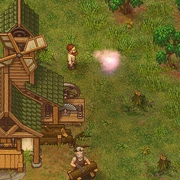 |
Behind Tress | Tress was napping beside the fire, surrounded by hundreds of origami paper rabbits. Hmm, this was recent, Tress was already old! Cory and some man from The Town are watching from a distance. The man looks like a doctor. The doctor leaves. Cory suddenly rushes over to Tress, gathers all the rabbits, and throws them into the fire... Tress awakens, shouts, and burns his hands trying to save the rabbits from the fire... |
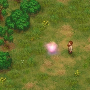 |
West of the Woodcutter | Koukol puts several pieces of raw meat on the ground, then whistles. An old falcon with a broken wing appears from the bushes. He starts swallowing pieces of meat. Koukol smiles kindly. Koukol pulls out a sandwich and starts chewing. Before he's done, he throws half his cutlet to the falcon. |
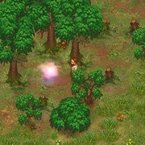 |
West of Koukol | The Lord Commander and some Mountain fort soldiers were here. The Lord passed sentence. And they hung someone... Yorick! That's how he died! What the hell... No, they hung two Yoricks! Yorick had a twin brother... |
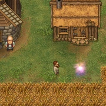 |
In front of the Miller | Bishop knocks on Miller's door. Two quick knocks, a pause, three slow knocks, a pause, and two more quick knocks. After that, he leaves a small bag of gold in front of the door, then goes to wait around the corner. Miller comes out, counts the gold, and takes it, leaving a bottle of whiskey in its place. Bishop examines the bottle, puts it on his head, covers it with his hat, and walks away. |
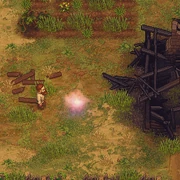 |
In the burned house west of Witch Hill | There're several people around a burned dead woman. They're talking and waiting for someone. Three vagabonds search the ashes for values. A woman vagabond finds a strange bundle in the nearby bushes, and runs away with it. Hmm... |
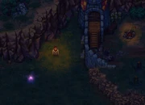 |
Next to the wall west of the Mountain fort | Lots of swords and armor surround Koukol and Snake, who are bargaining violently. A crowd of gypsies comes up, armed with knives. Koukol runs away. Snake and the Gypsy Baron shake hands. Snake takes part of the stuff away, and the gypsies take the rest. |
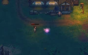 |
In front of the Farmer's house | A small boy draws smiling faces in soil. Two inquisitors approach him and say something. He runs into his house. Farmerleaves his home and starts arguing loudly with his visitors. They point to the nearby window from time to time. In the end, Farmer grabs a pitchfork and confronts them. the inquisitors quickly leave. A pale woman appears in the door. She looks gravely ill. Farmer embraces her gently, calms her, and leads back inside. |


Trivia
- The memory in Krezvold's courtyard is likely a reference to Terraria, as all 3 items mentioned match the names of items in said game.
| ||||||||